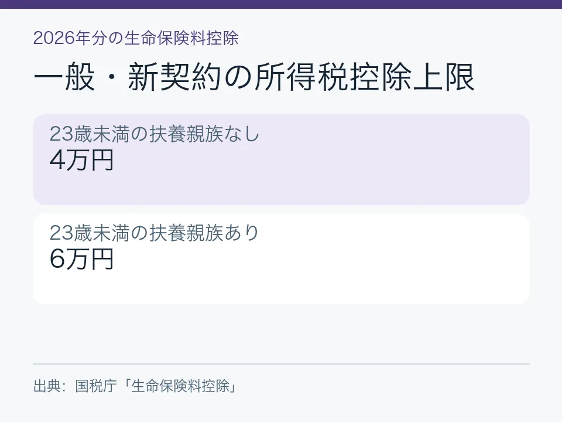
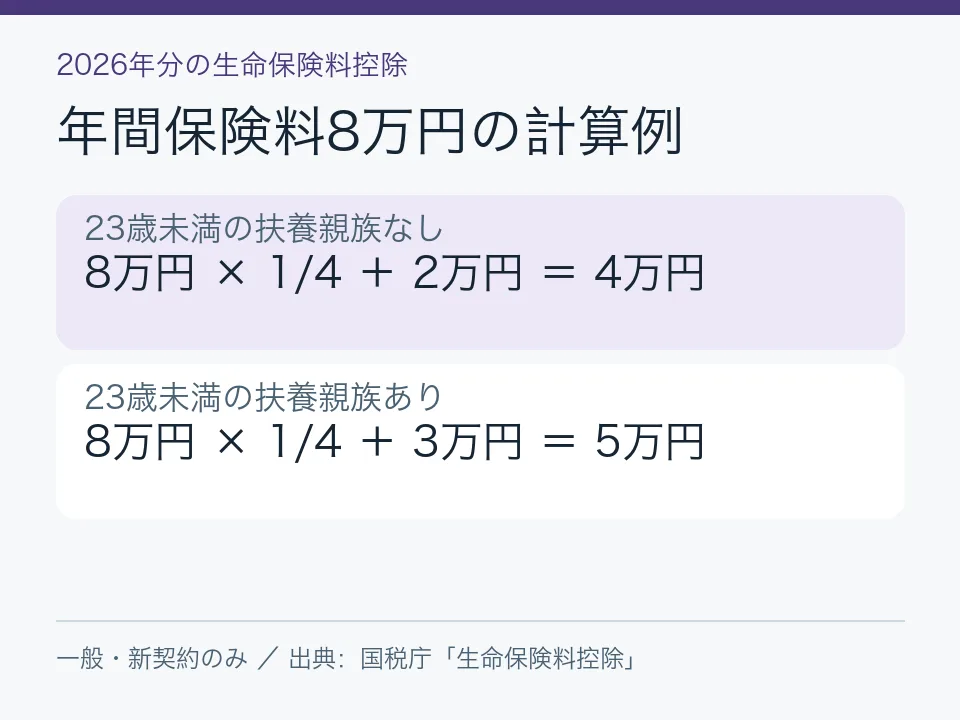

2026年分の所得税の生命保険料控除は、23歳未満の扶養親族がいる場合、新契約の一般生命保険料の控除上限が6万円です。通常の上限は4万円です。保険の区分が介護医療や個人年金の場合や、旧契約がある場合は計算が変わります。2026年11月24日時点の国税庁の資料に沿って、新契約だけのケースを中心に解説します。
012026年の上限は保険料の区分によって変わる
所得控除は、税率をかける前の所得から差し引く額です。たとえば控除額が6万円なら、所得の計算上6万円を差し引きます。給与の振込額や還付額がどのくらい変わるかは、給与や他の控除も含めた税額の計算で決まります。
| 新契約の保険料区分 | 23歳未満の扶養親族なし | 23歳未満の扶養親族あり |
|---|---|---|
| 一般生命保険料 | 4万円 | 6万円 |
| 介護医療保険料 | 4万円 | 4万円 |
| 個人年金保険料 | 4万円 | 4万円 |
| 3区分を合計した控除の上限 | 12万円 | 12万円 |

6万円の上限を使う前に、証明書で「一般」と「新」の両方を確認します。 新契約は原則として2012年1月1日以後に締結した契約です。複数の保険に加入していたら、保険の名称で分類せず、保険会社の証明書に記載された区分ごとに仕分けます。
02年間保険料8万円で控除額を比べる
一般生命保険料が新契約のみで、割戻金などを差し引いた後の年間保険料が8万円の場合を考えます。扶養親族の年齢条件などを満たすかで、この区分の控除額が変わります。
| 条件 | 使う式 | 一般生命保険料の控除額 |
|---|---|---|
| 23歳未満の扶養親族なし | 80,000円 × 1/4 ＋ 20,000円 | 40,000円 |
| 23歳未満の扶養親族あり | 80,000円 × 1/4 ＋ 30,000円 | 50,000円 |

上限が6万円でも、実際の控除額は保険料の計算式で決まります。 試算の差は5万円－4万円＝1万円です。扶養親族ありのケースで、別に介護医療と個人年金の控除額が各4万円なら、区分別の合計は5万円＋4万円＋4万円＝13万円です。合計上限が適用されるので、所得から差し引く生命保険料控除は12万円です。
03年末調整では何を確認して書く？
- 保険会社の控除証明書を集めます。今年中に受け取った割戻金などがあれば、支払額から差し引いた金額を確認します。
- 一般生命、介護医療、個人年金に仕分けます。一般生命と個人年金は新・旧の区分も確認します。
- 23歳未満の扶養親族に該当するかを確認し、該当する場合は2026年分の保険料控除申告書の該当欄に記載します。年齢のほか、税法上の扶養親族の条件にも当てはまるか確認してください。扶養親族の所得要件にも改正があるため、2026年12月の年末調整では勤務先の最新の案内を確認します。
- 申告書にある計算式に沿って記入し、勤務先の案内に従い証明書類を提出します。
新旧両方がある人は、一般の新契約だけの早見表で申告額を決めないでください。 旧契約だけの一般生命保険料には別の計算式があり、新旧両方の支払いがある場合は組み合わせによって計算が変わります。2026年分の申告書と国税庁の記載例で、証明書の区分を当てはめて確認できます。
注意年末調整の証明書類について、旧契約の一般生命保険料で1契約の保険料が9,000円以下の場合には添付などが不要となる例外があります。
04よくある質問
2026年の改正で生命保険料控除全体の上限は増えますか？
3区分の合計上限は12万円です。条件を満たす場合に一般生命保険料の新契約の計算式と上限が変わります。
上限が6万円なら必ず6万円を控除できますか？
控除額は年間保険料によって変わります。本文の保険料8万円の例では、扶養の条件を満たしても一般の新契約の控除額は5万円です。
年末調整では新旧の区分をどう見分けますか？
保険会社の控除証明書で確認します。証明書を区分ごとにそろえてから、保険料控除申告書の計算欄に転記します。
05まとめ
結論2026年分で一般生命保険料の新契約の上限が6万円になる条件は、23歳未満の扶養親族がいることです。保険料区分と扶養の条件を確認した後、区分別の計算と合計12万円の上限を適用します。